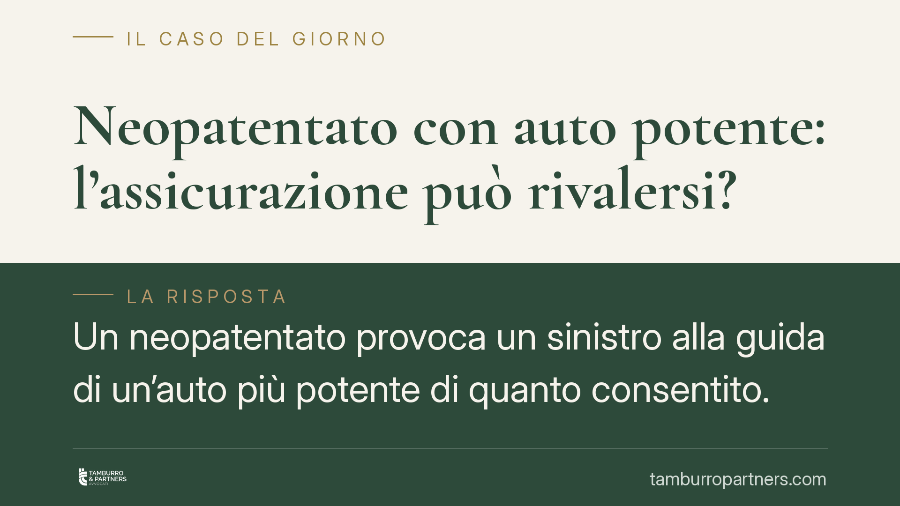

Neopatentato con auto potente: l'assicurazione può rivalersi?
Un neopatentato provoca un sinistro alla guida di un'auto più potente di quanto consentito. La compagnia risarcisce il terzo danneggiato, ma può poi rivalersi sull'assicurato? La distinzione tra guida senza abilitazione e semplice violazione dei limiti di potenza è decisiva. Ne dipende chi sopporta, in ultima istanza, il costo del danno.

Il caso tipico
Un conducente con patente da meno di un anno si mette alla guida di un'auto la cui potenza supera i limiti previsti per i neopatentati. Si verifica un incidente. La compagnia risarcisce il terzo danneggiato, come impone il sistema dell'assicurazione obbligatoria RC auto, e successivamente tenta di recuperare la somma dall'assicurato, invocando una clausola di rivalsa contenuta nelle condizioni generali di polizza.
La domanda è netta: la guida di un veicolo troppo potente per un neopatentato integra un'ipotesi di "guida senza abilitazione", tale da legittimare la rivalsa? Oppure resta una violazione di diversa natura, che non incide sul rapporto assicurativo?
Inquadramento normativo
Occorre partire da una distinzione precisa. L'abilitazione alla guida è la patente: chi la possiede è abilitato a condurre i veicoli della categoria corrispondente. Chi ne è privo, o l'ha vista revocata o sospesa, guida senza abilitazione.
Diverso è il regime delle limitazioni per i titolari di patente da poco tempo. L'art. 117 del Codice della strada (d.lgs. 285/1992) pone, per il primo periodo dal conseguimento della patente B, limiti alla potenza dei veicoli condotti dai neopatentati, con parametri di potenza specifica riferita alla tara e di potenza massima. La violazione di questi limiti è presidiata da una sanzione amministrativa pecuniaria e non trasforma il conducente in un soggetto privo di abilitazione: la patente c'è ed è valida.
Questa è la chiave dell'intera questione. Chi supera i limiti di potenza commette un illecito amministrativo, ma non guida "senza patente". Le due situazioni restano concettualmente e giuridicamente distinte.
Le clausole di polizza e l'interpretazione contra proferentem
Le clausole di rivalsa collegano spesso il diritto della compagnia all'ipotesi di conducente "non abilitato alla guida". Se la clausola è formulata in questi termini, essa non copre automaticamente la violazione dei limiti di potenza, che abilitazione presuppone e non nega.
Qui entra in gioco l'art. 1370 del codice civile. La norma dispone che, nei contratti conclusi mediante condizioni generali predisposte da uno dei contraenti, le clausole dubbie si interpretano a favore dell'altro contraente. È il principio dell'*interpretatio contra proferentem*: chi redige il testo sopporta il rischio dell'ambiguità.
Applicato alle polizze RC auto, il principio significa che, in presenza di una clausola di rivalsa dal tenore non univoco, il dubbio interpretativo va risolto in favore dell'assicurato. Una clausola che richiama la mancanza di abilitazione non può essere estesa, in via interpretativa e a danno dell'assicurato, fino a comprendere una fattispecie diversa come la guida di un'auto troppo potente.
Su questa linea si è collocata la giurisprudenza di legittimità, che ha valorizzato la distinzione tra assenza di abilitazione e mera violazione dei limiti di potenza per escludere, in casi analoghi, il diritto di rivalsa della compagnia.
Implicazioni pratiche
Per il neopatentato e per il proprietario del veicolo la conseguenza è rilevante: il risarcimento al terzo danneggiato resta a carico della compagnia, senza recupero verso l'assicurato, quando la clausola di rivalsa è ancorata alla sola mancanza di abilitazione.
Attenzione però: molto dipende dal testo concreto della polizza. Le condizioni generali possono contenere esclusioni specifiche e formulate in modo esplicito, che richiamino proprio la violazione dei limiti di guida. In tal caso lo spazio interpretativo si riduce e la posizione dell'assicurato si indebolisce.
Resta ferma, in ogni caso, la sanzione amministrativa per la violazione dell'art. 117 CdS, che opera su un piano diverso da quello assicurativo.
Cosa fare in concreto
- Verifica i limiti applicabili al veicolo prima di affidarlo o guidarlo nel primo periodo dopo la patente: controlla potenza massima e potenza specifica in relazione alla tara.
- Leggi la clausola di rivalsa nelle condizioni generali di polizza e individua l'esatta formulazione: distingui tra "mancanza di abilitazione" ed esclusioni specifiche sui limiti di guida.
- Conserva la documentazione del sinistro e la comunicazione di rivalsa: la richiesta della compagnia deve indicare la clausola invocata.
- Non aderire a richieste di rimborso prima di una verifica sul fondamento contrattuale della rivalsa.
- Fatti assistere per valutare, nel caso concreto, se la clausola sia opponibile o se operi l'interpretazione a favore dell'assicurato.
Disclaimer
Contributo informativo a cura di Tamburro & Partners - Avv. Giuseppe Tamburro. Non costituisce parere legale.
Ogni contratto ha il suo equilibrio.
Se vuoi una revisione delle clausole o una redazione su misura, scrivi allo studio. Ti rispondiamo entro un giorno lavorativo.